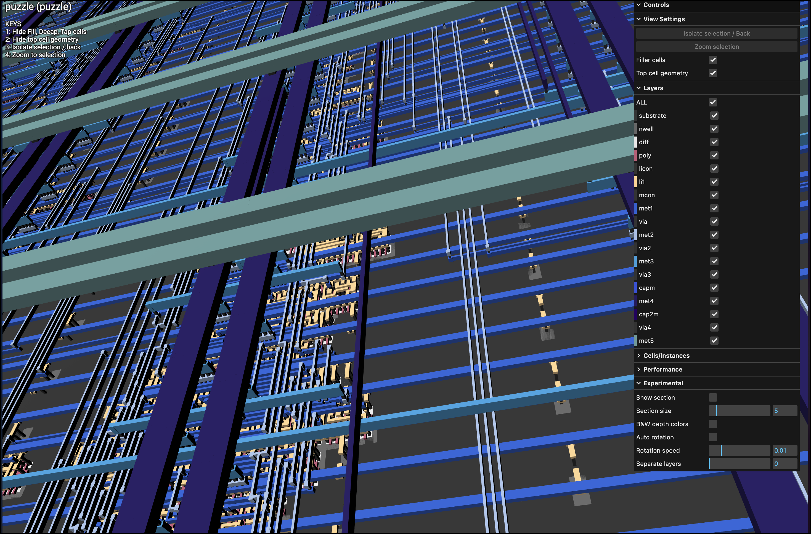

Justin Hwang
Table of Contents
- About Me
- Resume
- Career Goals
- Projects
- Solving Jane Street's ASIC Challenge
- Contributing to Open-Source RISC-V Processor (Summer 2025)
- Laser cut nameplates (Fall 2024)
- Minecraft Redstone Computer (Fall 2024)
- HyTech Racing Training Curriculum (Fall 2024 - Present)
- Emacs Org note-taking (Spring 2024 - Present)
- JUnit-style test cases (Fall 2023 - Spring 2024)
- Thermistor Board Project (Hytech Racing) (Fall 2023)
- Relevant Coursework
- Architecture, Systems, Concurrency, and Energy in Computation (Spring 2025)
- Signal Processing (Spring 2025)
- Programming for Hardware and Software Systems (Fall 2024)
- Digital Design Laboratory (Fall 2024)
- Circuit Analysis (Fall 2024)
- Data Structures & Algorithms (Spring 2024)
- Discrete Math for CS (Spring 2024)
- Intro Physics II (Spring 2024)
- Digital Systems & Design (Fall 2023)
- Contact
B.S. in Computer Engineering (Fall 2026)
Concentrations in Computing Hardware and System Architecture
Minor in Korean Language (Fall 2024)
About Me
I am a fourth-year Computer Engineering major with concentrations in Computing Hardware and System Architecture. I chose this field of study because I wanted to learn how computers work on a fundamental level and develop programming skills with concrete applications. I take pride in the quality of the work I produce, and I love working alongside others who feel the same way.
In my free time, I like to play intramural sports, sing in Georgia Tech Chamber Choir, run, and attend meetings for RUF (a campus ministry).
Resume
Career Goals
In the next few years, I hope to graduate with a Master's degree in Electrical and Computer Engineering and work full-time.
I also plan on learning as much as I can while interning at Tesla and SpaceX and applying those skills to other technical projects.
Ultimately, I would like to apply my skills in both hardware and software by designing processors.
Projects
Solving Jane Street's ASIC Challenge
In August 2026, Jane Street posted a challenge on their blog about reverse-engineering an ASIC. I spent ~30 hours over the course of the month trying to solve this puzzle. Here's a write-up of how I did it! (read more)

Contributing to Open-Source RISC-V Processor (Summer 2025)
Last spring, while talking to an FPGA engineer at a quant firm, she recommended that I work on an open-source processor to gain digital design experience. In particular, adding some sort of branch-prediction algorithm would be very effective. I found Darkriscv, an existing open-source RISC-V processor with a 3-stage pipeline and added a simple 1-bit branch predictor, which improved overall CPI by 13% (and branch CPI by 49%!).
Laser cut nameplates (Fall 2024)
When living on-campus, RAs usually print nameplates for every apartment door. These always annoyed me slightly, so I decided to use the laser cutters at one of GT's makerspaces to make my own.

Minecraft Redstone Computer (Fall 2024)
In my Digital Design classes, I constantly thought hmm, I could make this in Minecraft. Growing up, I'd spent countless hours using the in-game circuit system to make variou small mechanisms, but the same transistor-level building blocks could theoretically be used to make a full computer. So, my roommates and I decided to start up a new server to build a Turing-complete computer, starting with the simplest gates and progressing through a fully-functional processor, including a 16-bit adder, addressable RAM, a program counter, a logical unit, and a 4-digit hex display.
HyTech Racing Training Curriculum (Fall 2024 - Present)
At HyTech Racing, our car becomes more complex every year. As a result, the learning curve for new members becomes steeper every year. I wanted to increase two things: the number of actively-contributing members, and the contributions of each member. To this end, I designed a guided, asynchronous set of training modules that forms a semester-long curriculum. (read more)

Emacs Org note-taking (Spring 2024 - Present)
During CS classes, I take notes using a combination of Emacs Org-mode and LaTeX. This allows me to take notes in a markdown-like environment, but compile it into clean PDFs. Emacs is highly configurable, and I have really enjoyed using various features to take notes quickly and elegantly during class. (read more)

JUnit-style test cases (Fall 2023 - Spring 2024)
In my Object-Oriented Programming (CS 1331) and Data Structures/Algorithsm (CS 1332) classes, students are encouraged to share tester files for the homework assignments on the class forum. My friend and I began working together to write the most elegant, thorough, and compartmentalized tester files to monopolize the market. In total, we published over 25,000 lines of code and reached an estimated 4,000+ downloads. (read more)

Thermistor Board Project (Hytech Racing) (Fall 2023)
For Hytech, we needed an array of thermistors to measure temperature data at many different points. Initially, this was designed to measure data in an array between two large aluminum plates to to verify their thermal properties. (read more)

Relevant Coursework
Architecture, Systems, Concurrency, and Energy in Computation (Spring 2025)
From the course catalog (ECE 3058)
Basic organizational principles of the major components of a processor - The core, memory, hierarchy, I/O subsystem, and basic operating system constraints that utilize them.
Signal Processing (Spring 2025)
From the course catalog (ECE 2026)
Introduction to discrete-time and continuous-time signals. Filtering. Frequency response. Fourier Transform. Z transform. Laboratory emphasizes computer-based signal processing.
Programming for Hardware and Software Systems (Fall 2024)
From the course catalog (ECE 2035):
Creation of complex execution and storage mechanisms, based on instruction set architecture, for software design including high-level programming languages and operating systems.
Digital Design Laboratory (Fall 2024)
From the course catalog (ECE 2031):
Design and implementation of digital systems, including a team design project. CAD tools, project design methodologies, logic synthesis, and assembly language programming.
Circuit Analysis (Fall 2024)
From the course catalog (ECE 2040):
Basic concepts of DC and AC circuit theory and analysis.
Data Structures & Algorithms (Spring 2024)
From the course catalog (CS 1332):
Computer data structures and algorithms in the context of object-oriented programming. Focus on software development towards applications.
Discrete Math for CS (Spring 2024)
From the course catalog (CS 2050):
Proof methods, strategy, correctness of algorithms over discrete structures. Induction and recursion. Complexity and order of growth. Number theoretic principles and algorithms. Counting and computability.
Intro Physics II (Spring 2024)
From the course catalog (PHYS 2212):
A calculus-based course with laboratory covering electromagnetism, applications of electromagnetism, light, and modern physics.
Digital Systems & Design (Fall 2023)
From the course catalog (ECE 2020):
Computer system and digital design principles. Switch and gate design, Boolean algebra, […] storage elements. Datapath, memory organization, instruction set architecture, assembly language.
Contact
GitHub: @jhwang04
LinkedIn: Justin Hwang
Email: justin@goliath.org